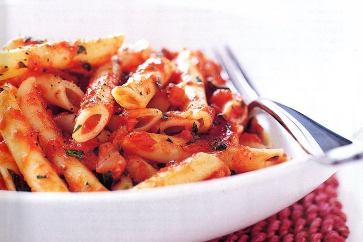

Tomato Sauce Pasta

Tomato Sauce Pasta
A very quike pasta recipe to make with 480 calories per serving
Ingredients
- 1 tbsp olive oil
- 1 brown onion, chopped
- 2 garlic cloves, crushed
- 1 x 800g can Italian diced tomatoes
- 1 tbsp tomato paste
- 1/3 cup chopped fresh continental parsley
- 1/2 tsp caster sugar
- Salt & freshly ground black pepper
- 400g penne rigate
Instructions
-
Heat the oil in a large frying pan over medium heat. Add the onion and
cook, uncovered, stirring often, for 3 minutes or until it softens
slightly. Add the garlic and cook, stirring, for 1 minute or until
aromatic.
-
Stir in the tomatoes and tomato paste. Increase heat to high and bring
to the boil. Reduce heat to medium and simmer, uncovered, stirring
often, for 6-7 minutes or until the sauce reduces and thickens slightly.
-
Stir in the parsley and sugar. Taste and season with salt and pepper.
-
Meanwhile, cook the pasta in a large saucepan of salted boiling water
following packet directions or until al dente. Drain and return to the
pan.
-
Add the sauce to the pasta and toss to combine. Serve immediately.